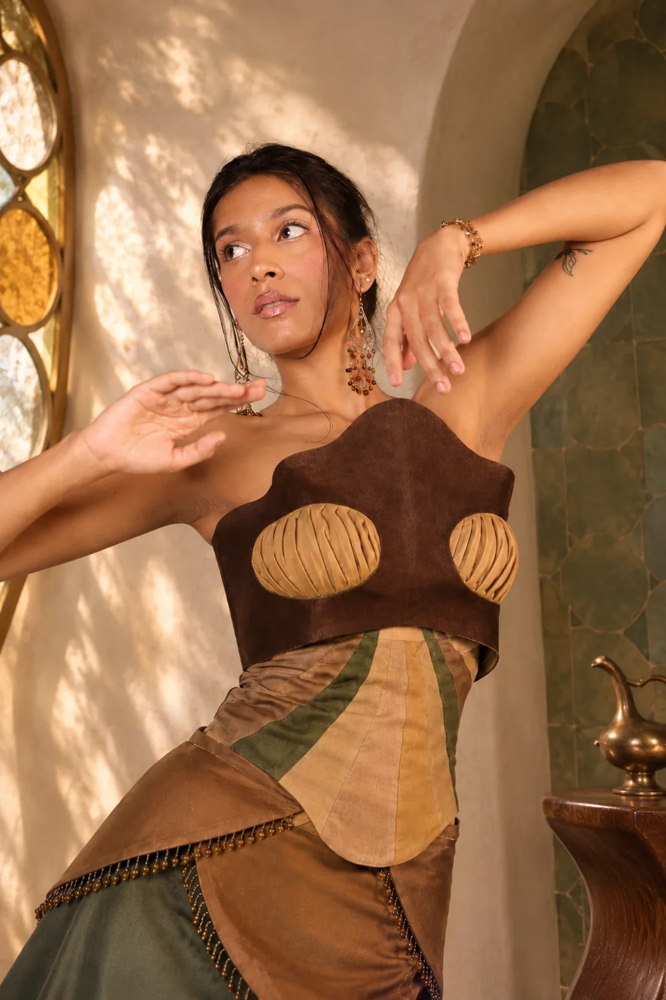
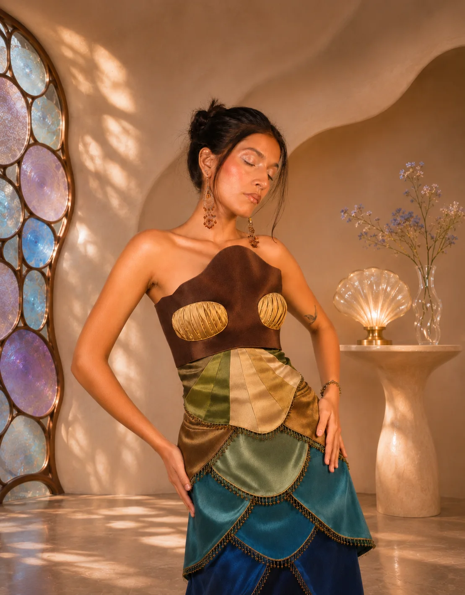

Creative direction
Six briefs for one picture
Before the shoot, every department got its own reference board. Pick a brief to see the board and what it asks for.
A fashion editorial inspired by the interiors of Casa Batlló: a woman who seems to have emerged from within its walls.
An extension of my fashion design research project on Casa Batlló, assessed as a separate module.

Gaudí's interiors blur architecture and nature. The editorial explores the relationship between the body and organic architecture, and translates four qualities of the house into clothes. Turn each card to see how.
Select a card to turn it.
Before the shoot, every department got its own reference board. Pick a brief to see the board and what it asks for.
The set moves from the warm wood, plaster and bronze of the house to the teal and indigo of its stained glass. The same order runs down the skirt, from ochre at the waist to indigo at the hem.
Select a colour to read where it appears.
One garment, five rooms of light: from sunlight through stained glass to deep water. Use the arrows, swipe, or the keyboard arrow keys.
Select a numbered point on the photograph, or an item in the list.

Casa Batlló interiors and the reference images on the direction boards belong to their photographers and appear here as academic moodboard references.